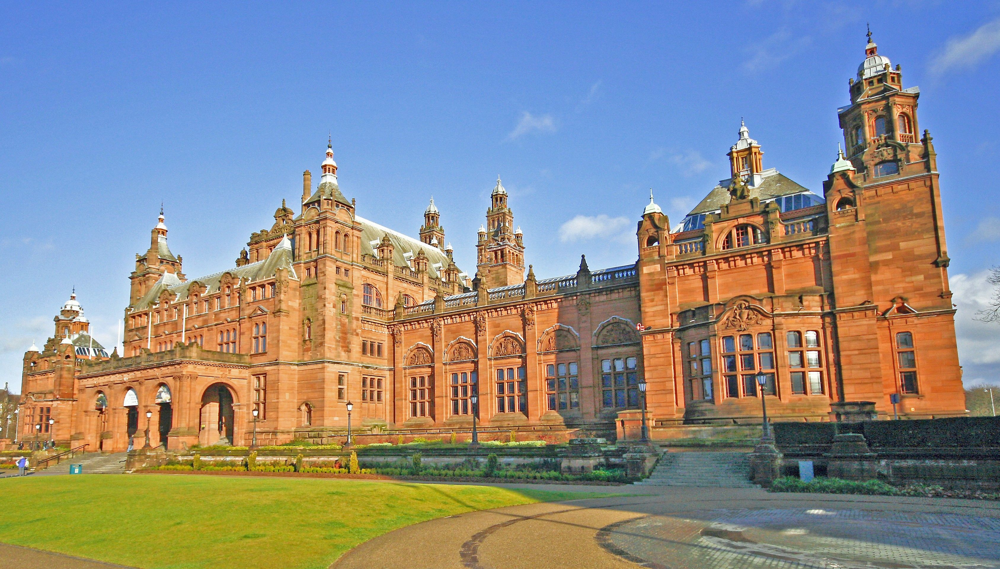
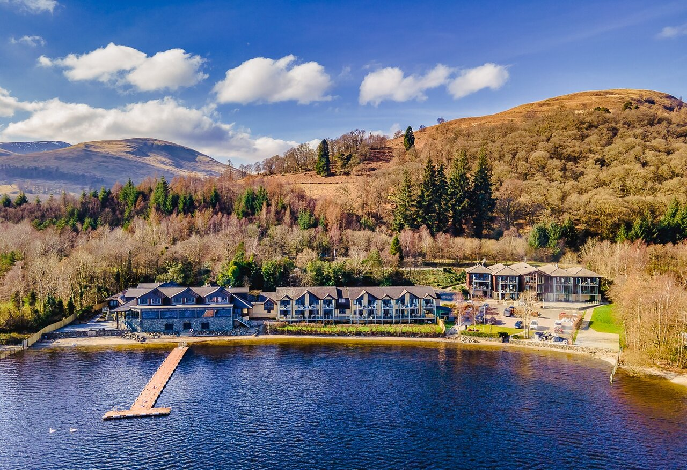

Concert at the Barrowland
Barrowland Ballroom is a dance hall and music venue in Glasgow, Scotland. The original Barrowland Ballroom opened in 1934
Learn more

Exhibition at Kelvingrove museum
Kelvingrove Art Gallery and Museum is a museum and art gallery in Glasgow, Scotland.
Learn more

Nature hike at Loch Lomond
Loch Lomond is a lake in southern Scotland. It’s part of the Loch Lomond and The Trossachs National Park.
Learn more